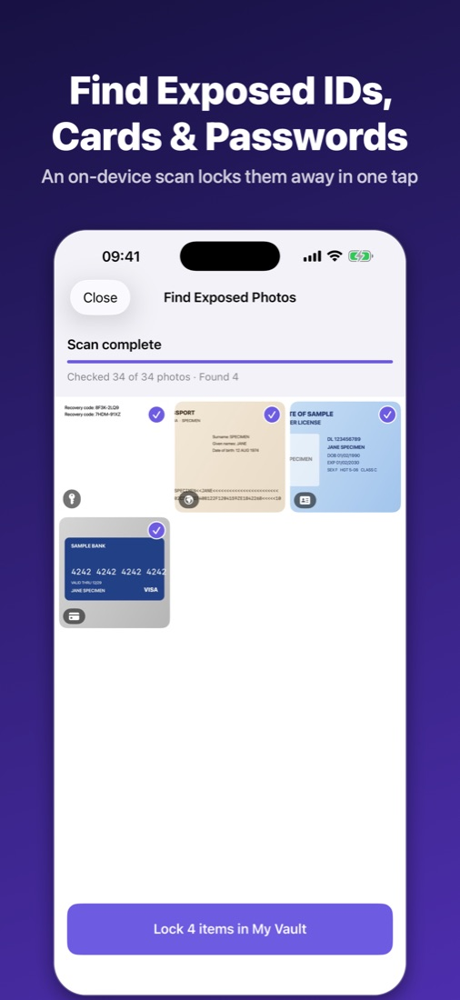
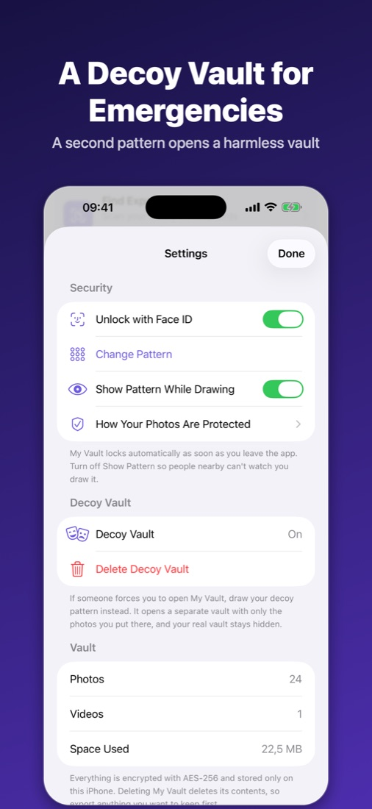
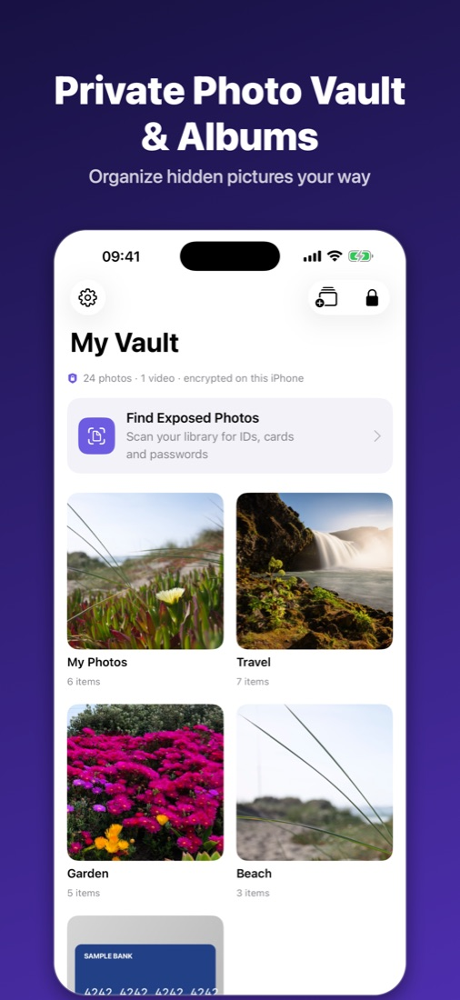
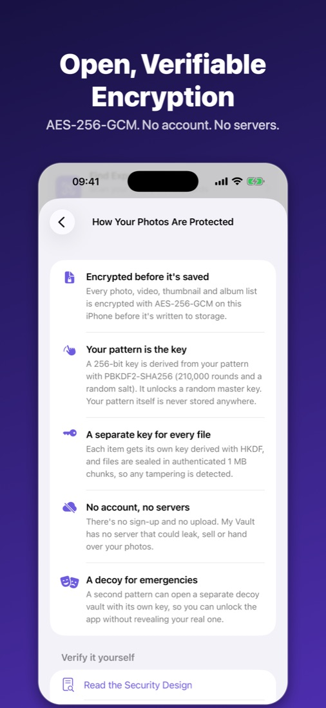
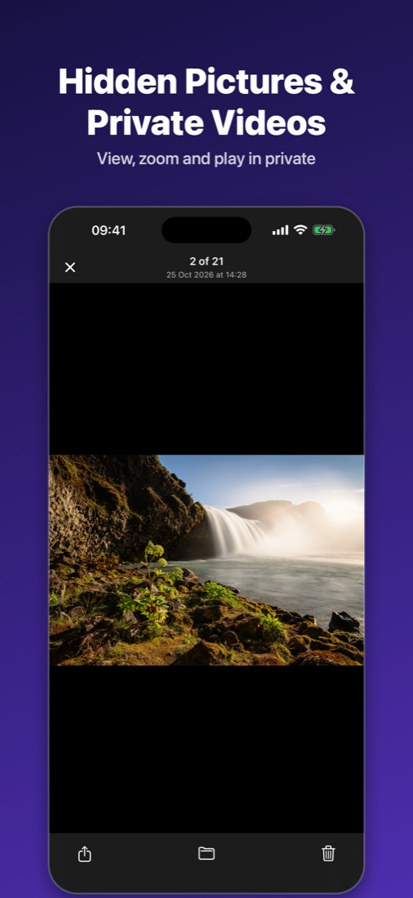
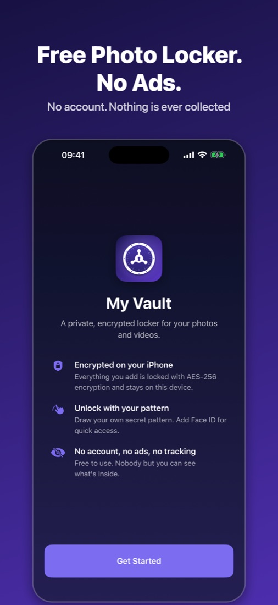

My Vault: Secret Photo Locker
A free, private photo vault for iPhone. Hide photos and videos behind your own secret pattern, encrypted on your device.






- Find exposed photos. An on-device scan finds pictures of IDs, passports, bank cards and passwords in your library and locks them away in one tap.
- Decoy vault. A second pattern opens a separate, harmless vault if someone forces you to unlock the app.
- Encrypted on your iPhone. Every photo and video is locked with AES-256 encryption and never leaves your device.
- Secret pattern lock. Draw your own pattern to open the vault, or use Face ID.
- Albums. Keep private photos organized in as many albums as you like.
- Private camera. Take photos and videos straight into the vault, never the camera roll.
- Clean up your camera roll. Remove the originals from Photos after hiding them.
- Auto-lock. The vault locks the moment you leave the app.
- No account, no ads, no tracking. Free to use.